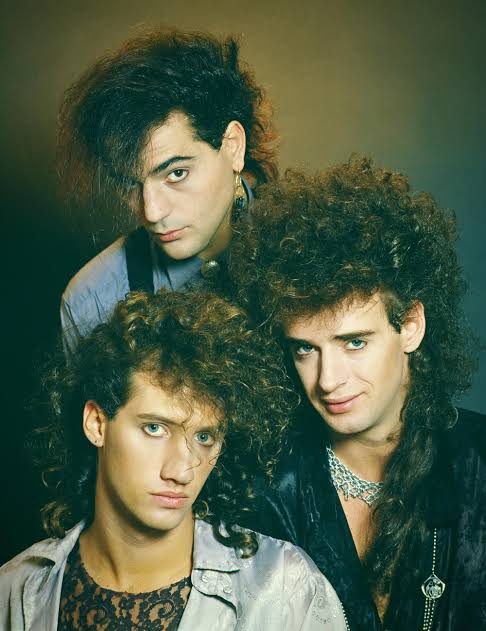
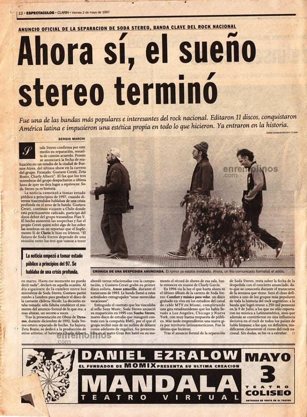
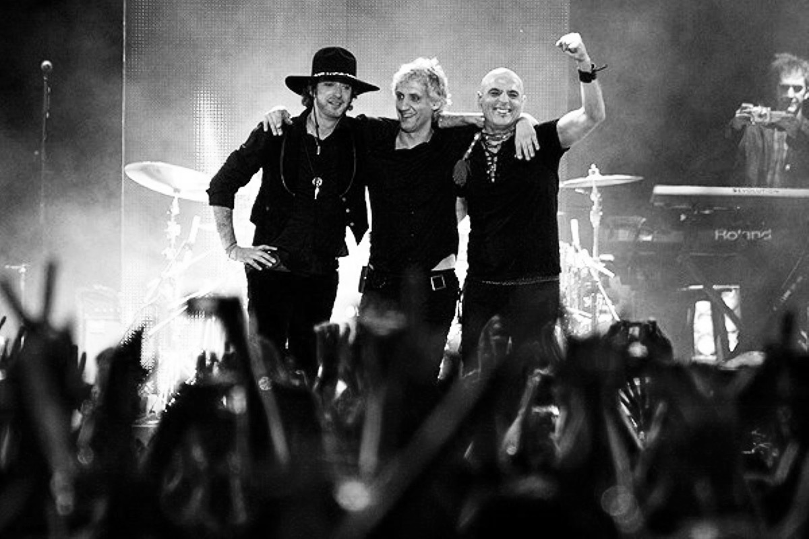

Soda Stereo fue una banda de rock argentina formada en Buenos Aires en 1982. La banda estaba integrada por Gustavo Cerati en la voz y la guitarra, Zeta Bosio en el bajo y Charly Alberti en la batería. Se convirtieron en una de las bandas más influyentes y exitosas del rock latinoamericano.

Su música evolucionó a lo largo de su carrera, incorporando elementos de rock, pop, *new wave* y música electrónica. Soda Stereo alcanzó la fama en toda América Latina y contribuyó a popularizar el rock cantado en español. La banda se disolvió oficialmente en 1997.

A lo largo de su trayectoria, Soda Stereo se convirtió en una de las bandas más importantes del rock latinoamericano. Actuaron en numerosos países de América Latina, Estados Unidos y Europa.
Uno de sus conciertos más memorables tuvo lugar en Buenos Aires en 1991, cuando actuaron ante una multitud en la Avenida 9 de Julio. Su gira de reencuentro de 2007, Me Verás Volver, también fue un gran éxito y atrajo a numeroso público en toda América Latina.

Hoy en día, se sigue recordando a Soda Stereo como una de las bandas más influyentes del rock en español, y su música continúa siendo popular entre las nuevas generaciones.